Лучшие курсы и программы по психологии
| Место | Программа обучения | Сайт курса |
|---|---|---|
| 1 🥇 | Бакалавриат по психологии Московский институт психологии |
Перейти |
| 2 🥈 | Бакалавриат по клинической психологии Московский институт технологий и управления |
Перейти |
| 3 🥉 | Магистратура по психологии Smart Институт |
Перейти |
| 4 | Магистратура по бизнес-психологии Московский институт психоанализа |
Перейти |
| 5 | Бакалавриат по психологии Московский институт технологий и управления |
Перейти |
| 6 | Бакалавриат по психологии, профиль
«Психоанализ» Восточно-Европейский Институт Психоанализа |
Перейти |
Лучшие курсы переподготовки по психологии, после которых сразу можно начать работать
| Место | Программа обучения | Сайт курса |
|---|---|---|
| 7 | Клиническая психология Московский институт психологии |
Перейти |
| 8 | Практическая психология с дополнительной специализацией в области
применения психотерапевтических технологий АНО «НИИДПО» |
Перейти |
| 9 | Психолог-консультант Московский институт технологий и управления |
Перейти |
| 10 | Обучение на клинического психолога Онлайн институт Smart |
Перейти |
| 11 | Клиническая психология Психодемия |
Перейти |
| 12 | Профессиональная переподготовка по клинической и кризисной
психологии Национальная академия дополнительного профессионального образования |
Перейти |
| 13 | Профессия психолог-консультант Talentsy |
Перейти |
| 14 | Клинический психолог: обучение с нуля Институт прикладной психологии в социальной сфере |
Перейти |
| 15 | Профессиональная переподготовка в области
когнитивно-поведенческой психотерапии Институт Профессионального Образования |
Перейти |
Бакалавриат по психологии – Московский институт психологии
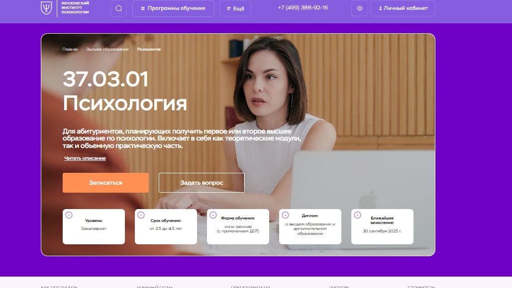⭐ Рейтинг: 5.0
- Сайт: mip.institute/bachelor/psikhologiya
- Полная стоимость: От 363 375 ₽ при оплате за весь срок обучения. Возможен налоговый вычет. Гранты не предусмотрены.
- Рассрочка: Доступна при оплате от одного года — от 7 900 ₽ в месяц.
- Длительность: От 3,5 до 4,5 лет, в зависимости от формы поступления и предыдущего образования.
- Документ: Диплом о высшем образовании (бакалавр) и диплом о дополнительном профессиональном образовании.
- Трудоустройство: Поддержка в запуске частной практики, доступ к профессиональному сообществу, помощь в построении карьеры.
Особенности курса:
Обучение по специальности «Психология» в Московском институте психологии сочетает фундаментальную теоретическую подготовку с насыщенной практикой. Программа включает дистанционные модули, адаптированные под занятость, и позволяет совмещать учёбу с работой. Уже на четвёртом курсе студенты получают вторую квалификацию бесплатно — по направлениям: семейная, организационная или кризисная психология. Учебный процесс проходит через онлайн-платформу, доступна поддержка куратора с первого дня. Все программы имеют государственную лицензию, а дипломы — международное приложение.
Преподаватели курса:
-
Перемолотова Ирина Александровна — семейный психолог, КПТ-терапевт, нейропсихолог, гештальт-терапевт, арт-терапевт. Опыт более 16 лет. Супервизор, коуч, член профессиональных ассоциаций. Руководитель направления по когнитивно-поведенческой терапии.
Кратко о программе курса:
- Общая психология
- Анатомия и физиология человека
- Методы научного исследования
- Иностранный язык
- Русский язык и культура речи
- Информатика
- Введение в профессию
- Физическая культура и спорт
- Всеобщая история
- Дополнительная специализация: «Основы семейной психологии», «Корпоративная и организационная психология» или «Кризисная и экстремальная психология» — на выбор, с получением второй квалификации.
Чему научитесь:
Вы овладеете базовыми и прикладными дисциплинами, научитесь работать с клиентами, проводить диагностику и терапию, выходить с ними из стрессовых состояний. Получите навыки консультирования, психодиагностики и супервизии. Сформируете компетенции для ведение частной практики и профессионального роста в разных направлениях.
Преимущества и особенности:
- Гибкий график — обучайтесь онлайн, не прерывая работу или учёбу.
- Два диплома — по психологии и дополнительной специализации — включены в стоимость.
- Возможность поступления без ЕГЭ при наличии среднего или высшего образования.
- Дистанционные вступительные испытания — не нужно приезжать в Москву.
- Скидки до 30% — за высокие баллы ЕГЭ, для льготных категорий и при оплате в рассрочку.
- Возврат средств в первые 14 дней, если вы передумаете учиться.
- Работа с реальными кейсами и развитие практических навыков с первого курса.
Читайте отзывы учеников:
Выпускники особенно отмечают практико-ориентированный подход, качественную поддержку кураторов и востребованность диплома при трудоустройстве. Многие подчёркивают простоту оформления документов, удобство платформы и возможность применять знания уже во время обучения. Особенно ценят преподавателей с реальным опытом терапии и работы с клиентами.
Бакалавриат по клинической психологии – Московский институт технологий и управления
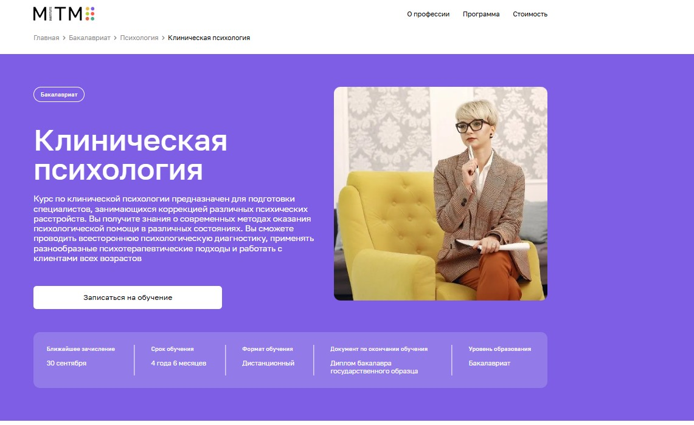⭐ Рейтинг: 5.0
- Сайт: mitm.institute/klinicheskaya-psihologiya-1--bakalavriat
- Полная стоимость: от 5 000 ₽/мес. с беспроцентной рассрочкой, возможен налоговый вычет в размере 13% от затрат на обучение.
- Рассрочка: от 5 000 ₽ в месяц на 12 месяцев без переплат.
- Длительность: 4 года 6 месяцев.
- Документ: Диплом бакалавра государственного образца.
- Трудоустройство: Программа сопровождается поддержкой в трудоустройстве после окончания курса, помощь в построении карьеры в профильной сфере.
Особенности курса:
Обучение построено в дистанционном формате, что позволяет получать высшее образование из любой точки мира без необходимости личного присутствия. Программа ориентирована на практику — 70% занятий направлены на развитие реальных навыков: психодиагностика, консультирование, психотерапия. Актуальный учебный план адаптирован под запросы современных работодателей. Возможен перевод из других вузов без потери курса, поступление без ЕГЭ для выпускников школ, колледжей и обладателей высшего образования. Государственная лицензия гарантирует легитимность получаемого диплома.
Кратко о программе курса:
- Основы клинической психологии и диагностика расстройств.
- Методы психодиагностики у детей, подростков и взрослых.
- Психотерапевтические подходы: когнитивно-поведенческий, психодинамический, интегративный.
- Психопрофилактика и работа с кризисными состояниями.
- Психология личности и возрастная психология.
- Психология труда, инженерная психология и эргономика.
- Практические семинары и кейсы в личном кабинете онлайн-платформы.
- Подготовка к итоговой государственной аттестации.
Чему научитесь:
Научитесь проводить диагностику психических состояний, работать с клиентами разного возраста, применять эффективные методы психокоррекции и консультирования, а также строить профилактическую работу с личностными кризисами и расстройствами.
Преимущества и особенности:
- Дистанционное обучение с возможностью учёбы из любой страны — не нужно приезжать в Москву.
- Поступление без ЕГЭ для абитуриентов с разным уровнем образования: после 11 классов, колледжа или другого вуза.
- Скидка 30% и бесплатный курс в подарок при записи до 20 сентября.
- Каждый студент получает поддержку куратора 24/7 на протяжении всего срока обучения.
- Онлайн-лекции и практические занятия доступны в записи — можно совмещать учёбу с работой.
- Диплом государственного образца, признаваемый работодателями по всей России.
- Программа включает стажировку и практику в реальных условиях.
Читайте отзывы учеников:
Слушатели отмечают доступность формата, качественную организацию лекций и высокий уровень преподавателей — среди них ведущие эксперты и члены профессиональных ассоциаций. Многие подчёркивают, что дистанционный формат ничем не уступает очному, особенно ценят гибкость графика. Абитуриенты благодарны за помощь на этапе поступления и быструю обратную связь. Выпускники отмечают, что курс помог им сменить профессию и начать практику уже во время учёбы.
Магистратура по психологии – Smart Институт
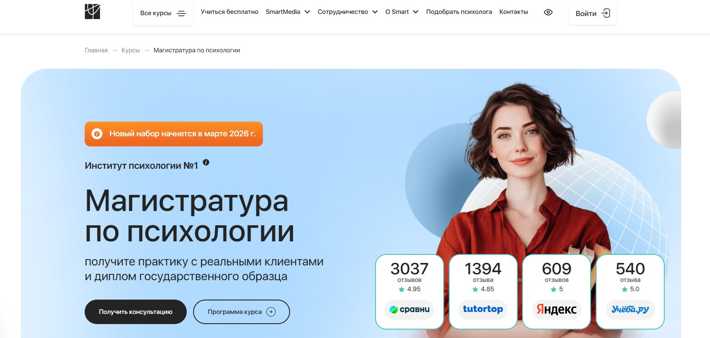⭐ Рейтинг: 4.9
- Сайт: smart-inc.ru/masters-degree/
- Полная стоимость: От 106 200 ₽ за семестр. Доступна рассрочка. Возможен налоговый вычет — верните 13% от стоимости.
- Рассрочка: Условия рассрочки обсуждаются индивидуально при поступлении.
- Длительность: 2–2,5 года в зависимости от выбранной специализации.
- Документ: Диплом магистра государственного образца от Тольяттинского государственного университета и диплом о дополнительном профессиональном образовании от Smart.
- Трудоустройство: Доступ в Центр карьеры, поддержка при запуске частной практики, возможность стать членом ОППЛ и АППП на льготных условиях.
Особенности курса:
Обучение сочетает глубокую теоретическую подготовку с практикой у реальных клиентов уже через год. Студенты получают доступ к собственному агрегатору SmartHelp, где начинают консультирование под супервизией. Программа включает модули по социальной психологии, юридическим аспектам и этике профессии. Обучение проходит полностью дистанционно — не нужно приезжать в университет. Упор сделан на практические навыки и личное сопровождение: кураторы доступны каждый день, а преподаватели — практикующие специалисты с академическими степенями.
Преподаватели курса:
-
Оксана Денисова — доктор педагогических наук, кандидат психологических наук, профессор, более 19 лет в сфере образования, руководитель магистерской программы, участник федеральных образовательных проектов.
-
Светлана Варнавская — коуч MCC ICF с более чем 4000 часами практики, специалист по трансформационному и КПТ-коучингу, супервизор и ассессор международных программ.
Кратко о программе курса:
- Психологическое консультирование: работа с запросами, диагностика, этика, семейное и кризисное консультирование.
- Детская психология: возрастная динамика, нейропсихологические методы, юридические основы, коррекционная работа с детьми.
- Психология управления: оценка персонала, лидерские тренинги, сопровождение изменений, HR-психология, корпоративные коммуникации.
- Дополнительно: получение диплома ДПО «Психолог в социальной сфере» (450 часов) и специализация по выбранному направлению (КПТ, арт-терапия, бизнес-психология и др.).
- Для направления «Психология управления» также включены модули MBA и бизнес-психологии.
Чему научитесь:
Вы освоите современные методы работы с клиентами, научитесь проводить диагностику, составлять индивидуальные стратегии помощи и применять знания в частной практике или корпоративной среде. Получите реальный опыт консультирования, поймёте, как запускать и развивать психологическую практику.
Преимущества и особенности:
- Полностью дистанционное обучение — можно совмещать с работой и личной жизнью.
- Практика с настоящими клиентами уже через 12 месяцев через агрегатор SmartHelp.
- Двойная квалификация: диплом магистра и диплом о переподготовке.
- Персональное сопровождение: кураторы доступны 24/7, поддержка до старта карьеры.
- Интеграция в профессиональные сообщества: Smart — коллективный член ОППЛ.
- Опытные преподаватели — практики с академическими званиями и реальными кейсами.
- Выпускники получают доступ к Центру карьеры и бонусы для трудоустройства.
Читайте отзывы учеников:
Слушатели отмечают высокую практическую ценность программы, доступность преподавателей и индивидуальный подход. Многие подчёркивают, что уже во время обучения начали принимать первых клиентов и зарабатывать. Особенно ценят гибкий формат и поддержку кураторов. Студенты отмечают чёткую структуру курсов и своевременное реагирование на вопросы.
Магистратура по бизнес-психологии – Московский институт психоанализа
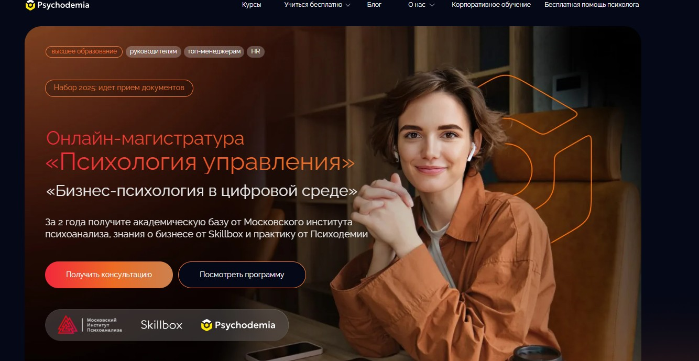⭐ Рейтинг: 4.9
- Сайт: psychodemia.ru/biznes-psikhologiya-v-tsifrovoy-srede
- Полная стоимость: 160 000 ₽, доступен образовательный кредит с господдержкой от Сбера, возможен налоговый вычет за обучение.
- Рассрочка: От 240 ₽ в месяц в первый год при кредитовании, оплата по семестрам.
- Длительность: 2 года.
- Документ: Диплом магистра государственного образца по направлению 37.04.01 Психология, удостоверение о повышении квалификации, сертификат от Skillbox.
- Трудоустройство: 20 000 выпускников нашли работу после обучения, 175 компаний-партнёров для практики и стажировки, помощь в трудоустройстве.
Особенности курса:
Программа сочетает академическую подготовку от Московского института психоанализа с практическими знаниями в сфере бизнеса и цифровых технологий. Обучение построено на кейсах из реальной работы в IT и крупных компаниях. Студенты проходят практику в профильных организациях, применяя навыки на рабочем месте. Финал программы — защита собственного проекта перед комиссией. Формат полностью онлайн, подходит для работающих специалистов. Уделяется внимание коучингу, командной эффективности, стресс-менеджменту и внедрению изменений в цифровой среде.
Преподаватели курса:
-
Гули Базарова — кандидат психологических наук, директор Московской школы практической психологии, executive-коуч со стажем более 25 лет, амбассадор «Сколково».
-
Тахир Базаров — доктор психологических наук, профессор МГУ, научный руководитель МИП, президент Ассоциации бизнес-психологов России.
-
Александр Крымов — кандидат наук, преподаватель МИП, автор более 100 статей по управлению персоналом и проектному менеджменту.
-
Максим Цветков — клинический и семейный психолог, преподаватель МИП, медицинский психолог в психиатрической больнице №3 Москвы.
Кратко о программе курса:
- Подбор персонала с фокусом на сильных сторонах сотрудников.
- Управление мотивацией и организация эффективной командной работы, включая удалённые форматы.
- Оценка компетенций и применение коучинговых методов.
- Разработка программ обучения и развитие культуры постоянного роста.
- Работа с конфликтами, эмпатия и налаживание внутренней коммуникации.
- Проведение маркетинговых и HR-исследований, анализ данных.
- Управление проектами и оптимизация бизнес-процессов.
- Внедрение цифровых изменений с психологическим сопровождением.
- Сертификация через диплом МИП, удостоверение о повышении квалификации и сертификат Skillbox.
Чему научитесь:
Вы освоите навыки управления командами в цифровой среде, научитесь подбирать персонал, проводить ассессменты, управлять проектами и внедрять изменения с учётом психологических аспектов. Программа подготовит к работе в качестве бизнес-психолога, HR-партнера или менеджера по развитию.
Преимущества и особенности:
- Высшее образование по программе магистратуры с дипломом государственного образца.
- Совмещение академической базы МИП, практики от Психодемии и бизнес-экспертизы от Skillbox.
- Практика в IT-компаниях и на рабочем месте с возможностью внедрить собственные проекты.
- Онлайн-обучение с доступом к занятиям из любой точки мира, записи лекций.
- Защита магистерской диссертации с реальным бизнес-проектом.
- Льготы: отсрочка от армии, поддержка по трудоустройству, учёба с государственной субсидией.
- Для поступления не требуется предыдущее образование в сфере психологии — всё изучите в процессе.
Читайте отзывы учеников:
Выпускники подчёркивают высокий уровень подготовки, востребованность полученных компетенций на рынке труда и поддержку кураторов. Часто отмечают актуальность тем по стрессам, выгоранию и управлению командами в условиях цифровизации. Многие нашли новую работу или продвинулись по карьерной лестнице сразу после окончания программы.
Бакалавриат по психологии – Московский институт технологий и управления
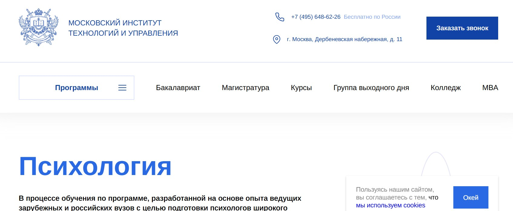⭐ Рейтинг: 4.9
- Сайт: mitu.institute/programs/bakalavriat/psihologiya/psihologiya
- Полная стоимость: 86 400 ₽ в год, возможен возврат 13% через налоговый вычет. Гранты на обучение не предоставляются.
- Рассрочка: 5 000 ₽ в месяц на 12 месяцев — беспроцентная рассрочка от института.
- Длительность: 4 года 6 месяцев для выпускников 11 классов. Сокращённый срок — 3,5 года при наличии диплома о среднем или высшем образовании.
- Документ: Государственный диплом бакалавра, Supplement к диплому, подтверждающий соответствие международным стандартам.
- Трудоустройство: Помощь в трудоустройстве, поддержка при открытии частной практики, консультирование по построению карьеры.
Особенности курса:
Обучение построено на основе современных научных разработок и практик ведущих отечественных и зарубежных вузов. Программа готовит специалистов широкого профиля, способных работать в коммерческих структурах, государственных учреждениях или самостоятельно. Все занятия проводятся онлайн — можно обучаться из любой точки мира. Поддержка куратора доступна 24/7. Поступление без ЕГЭ возможно по специальной программе для абитуриентов с аттестатом, дипломом колледжа или вторым высшим образованием.
Кратко о программе курса:
- Психодиагностика и методы оценки личности.
- Основы психотерапии и психодинамические подходы.
- Педагогическая психология и особенности взаимодействия в образовательной среде.
- История развития психологической науки.
- Психология личности и механизмы саморегуляции.
- Психология труда, инженерная психология и эргономика.
- Работа с внутриличностными и межличностными конфликтами.
- Практические модули по консультированию и психологической помощи.
- Методология научных исследований и исследовательские практики.
- Подготовка и защита выпускной квалификационной работы.
Чему научитесь:
Вы освоите навыки диагностики психического состояния, научитесь проводить консультирование, понимать механизмы развития личности и помогать людям в решении психологических трудностей на разных этапах жизни.
Преимущества и особенности:
- Дистанционное обучение — можно совмещать с работой или другими обязательствами.
- Поступление без ЕГЭ и возможность перевода из другого вуза без потери курса.
- Государственный диплом, признаваемый по всему миру, с приложением на английском языке.
- Доступ к онлайн-платформе с записями всех лекций и материалов до конца обучения.
- Поддержка куратора и сопровождение на всех этапах — от подачи документов до защиты диплома.
- Ежемесячное зачисление, ближайшее — 20 сентября.
- Скидка 30% и бесплатный курс в подарок при поступлении до 18 сентября.
- Доступные цены и беспроцентная рассрочка — образование без переплат.
Читайте отзывы учеников:
Слушатели отмечают высокий уровень поддержки со стороны кураторов, реальную практическую пользу материалов и удобный формат подачи информации. Многие отмечают, что дистанционное обучение позволило им совмещать учёбу с работой, а современные методики помогли глубже понять себя и других. Абитуриенты ценят возможность поступить без сдачи ЕГЭ и быстрое оформление документов.
Бакалавриат по психологии, профиль «Психоанализ» – Восточно-Европейский Институт Психоанализа

⭐ Рейтинг: 4.8
- Сайт: eeip.ru/obrazovanie/bakalavriat
- Полная стоимость: 85 000 рублей за семестр с возможностью образовательного кредита под 3% годовых и налогового вычета.
- Рассрочка: Предусмотрена рассрочка платежа — уточняется индивидуально при оформлении договора.
- Длительность: 3 года (очно-заочная форма обучения).
- Документ: Диплом бакалавра по направлению «Психология», профиль «Психоанализ».
- Трудоустройство: Возможность начать частную практику, работать в психологических центрах, а также применять знания в педагогике, медицине и других сферах, связанных с взаимодействием с людьми.
Особенности курса:
Образовательная программа ориентирована на специалистов, которые хотят сменить профессию или получить дополнительное психологическое образование. Обучение подходит на базе любого высшего диплома. Учебный процесс сочетает фундаментальные дисциплины общей психологии и глубокое погружение в психоаналитический подход. Программа включает как теоретические, так и практические аспекты, необходимые для клинической работы с клиентами. Обучение проходит в вечернее время или с использованием дистанционных технологий, что позволяет совмещать учёбу с работой. Преподаватели — практикующие специалисты с клиническим опытом, кандидаты и доктора наук.
Кратко о программе курса:
- Базовые дисциплины по общей психологии.
- Теория и техника психоаналитического подхода.
- Методы диагностики и консультирования пациентов.
- Биология и нейропсихология в контексте психоанализа.
- Социальная психология и коммуникации.
- Итоговая аттестация с очным или дистанционным участием (в зависимости от обстоятельств).
Чему научитесь:
Вы освоите ключевые навыки для ведения психологической практики, научитесь понимать глубинные механизмы поведения, разовьёте компетенции в диагностике и консультировании. Программа подойдёт как для старта карьеры, так и для личностного роста.
Преимущества и особенности:
- Обучение доступно на базе любого высшего образования — подходит для карьерного пересмотра.
- Форматы очно-заочного и дистанционного обучения позволяют совмещать учёбу с работой.
- Сильный преподавательский состав: практикующие психологи, медики, философы с научными степенями.
- Поддержка при поступлении, включая тренировочное тестирование и помощь в подаче документов.
- Диплом государственного образца, позволяющий вести частную практику и работать в профильных учреждениях.
- Возможность оформить образовательный кредит с льготными условиями и получать налоговый вычет.
Читайте отзывы учеников:
Студенты отмечают гибкий график, доступность преподавателей и практическую направленность программы. Многие подчёркивают, что обучение помогло не только освоить профессию, но и глубже понять себя. Часто упоминаются удобство онлайн-формата, качественные материалы и поддержка приёмной комиссии на всех этапах.
Курсы переподготовки, после которых сразу можно начать работать
Клиническая психология – Московский институт психологии
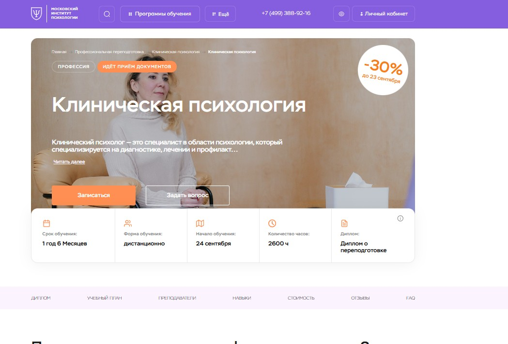⭐ Рейтинг: 5.0
- Сайт: mip.institute/professions/klinicheskaya-psihologiya/klinicheskaya-psihologiya
- Полная стоимость: 159 489 ₽ вместо 228 000 ₽ — скидка до 30% до 19 сентября. Возможен налоговый вычет при оплате, доступна беспроцентная рассрочка.
- Рассрочка: от 13 300 ₽ в месяц на 12 месяцев без переплат.
- Длительность: 1 год 6 месяцев (2600 часов).
- Документ: Диплом о профессиональной переподготовке с международным приложением.
- Трудоустройство: Поддержка при запуске частной практики, членство в Общероссийской профессиональной психотерапевтической лиге (ОППЛ) для выпускников.
Особенности курса:
Программа дает комплексные знания по клинической психологии с акцентом на практику. Обучение проходит онлайн — можно из любой точки мира. В программу входят разборы реальных клиентских кейсов, индивидуальные задания с обратной связью и демонстрационные сессии. Учебный план соответствует профессиональным стандартам и ценится в профессиональной среде. Платформа доступна 24/7, есть библиотека, вебинары и поддержка куратора. Все дипломы — с международным приложением и поддержкой лицензированного вуза.
Преподаватели курса:
-
Леонов Михаил Михайлович — кандидат биологических наук, клинический психолог и сексолог с 17-летним стажем, специалист по когнитивно-поведенческой терапии и схематерапии.
-
Волченкова Анастасия Александровна — кандидат психологических наук, доцент, клинический и нейропсихолог, сертифицированный детский гештальт-терапевт с 10-летним опытом.
Кратко о программе курса:
- Клиническая психология и этика специалиста
- Нейропсихология и патопсихология
- Психосоматика и работа в соматических учреждениях
- Основы современной психологии и психотерапии
- Анатомия и физиология ЦНС, неврология, психиатрия
- Психология развития, личностных расстройств, неврозов и аддикций
- Суицидальное и травматическое поведение
- Геронтология, онкология, наркология в психологии
- Судебно-психологическая экспертиза и психодиагностика
- Практикумы: по психотерапии, нейропсихологии, патопсихологии и экспертной оценке
- Супервизии и интервизии с кейсами
- Работа с клиентскими запросами: диагнозы, кризисы, зависимости, горе
Чему научитесь:
Научитесь ставить диагнозы, проводить клиническое интервью, работать с психической симптоматикой и разрабатывать стратегии помощи. Освоите методы психодиагностики, консультирования и психокоррекции, сможете применять знания в частной практике.
Преимущества и особенности:
- Дистанционное обучение с гибким графиком — подходит для работающих и новичков.
- Практико-ориентированная программа: кейсы, супервизии, практические задания.
- Диплом с международным приложением и признанием в профессиональном сообществе.
- Членство в ОППЛ — доступ к сообществу, повышение доверия клиентов.
- Возврат средств в первые 14 дней, если программа не подойдёт.
- Поддержка куратора и личная обратная связь от преподавателей.
- Доступ к библиотеке и записи вебинаров на весь период обучения.
Читайте отзывы учеников:
Студенты отмечают, что курс структурирован, без лишней теории, с понятным изложением материала. Многие подчёркивают пользу практических заданий и поддержку наставников. Слушатели, ранее сомневавшиеся в дистанционном формате, отмечают высокое качество обучения и готовность к работе после диплома. Особенно ценят — возможность учиться в удобное время и сразу применять знания в личной жизни и практике.
Практическая психология с дополнительной специализацией в области применения психотерапевтических технологий – АНО «НИИДПО»
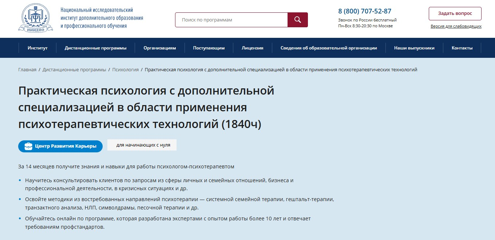⭐ Рейтинг: 5.0
- Сайт: niidpo.ru/seminar/psiholog-psihoterapevt-1840-chasov
- Полная стоимость: 88 800 ₽ при оплате до 19.09.2025 (вместо 99 500 ₽), доступна налоговая компенсация до 13% от стоимости.
- Рассрочка: От 8 295 ₽ в месяц на 12 месяцев, 0% переплат, без первого взноса через банковскую рассрочку или Яндекс PAY.
- Длительность: 60 недель (около 14 месяцев), возможен сжатый график обучения — 37 недель.
- Документ: Диплом о профессиональной переподготовке с двумя квалификациями — «Практический психолог» и «Психолог-психотерапевт», действует по всей России.
- Трудоустройство: Поддержка в запуске частной практики, помощь в продвижении через Центр Развития Карьеры, доступ к базе вакансий и материалам для старта работы.
Особенности курса:
Программа сочетает академическую подготовку и практику, соответствует требованиям ФГОС и профессиональным стандартам. Обучение проходит полностью онлайн, вы можете учиться в любое удобное время с ноутбука или в мобильном приложении. Учебные материалы доступны 24/7, после завершения — бессрочный доступ к лекциям и пособиям. Включены тестирования, практические задания с обратной связью от экспертов, а также более 20 вебинаров с сертификатами. Дополнительно — доступ к архиву из 13 000+ вебинаров, в том числе 1600+ по психологии, и книжный клуб для студентов.
Кратко о программе курса:
- Оценка психологического развития и возрастных кризисов
- Основы социальной и педагогической психологии
- Психологическая диагностика и психодиагностика
- Техники психологического консультирования и коррекции
- Методы психотерапии: системная семейная терапия, гештальт, транзактный анализ, НЛП, символдрама, песочная терапия
- Коучинговые и консультировочные технологии
- Работа с запросами в личных, семейных и профессиональных сферах
- Ведение кризисных консультаций
- Трудовые функции, соответствующие профстандарту в социальной сфере
- Итоговая междисциплинарная аттестация в форме тестирования
Чему научитесь:
Получите глубокие знания и практические навыки для работы с клиентами по широкому спектру запросов. Освоите современные методы психотерапии, научитесь проводить диагностику, строить эффективные консультации и помогать в кризисных ситуациях.
Преимущества и особенности:
- Два диплома по итогам одного обучения — возможность работать в разных сферах и с разными клиентами.
- Практико-ориентированная программа с 790 часами теории и 1036 часами практики — готовность к работе с первого дня.
- Доступ к Центру Развития Карьеры: помощь в упаковке личного бренда, продвижении в соцсетях, подготовке к частной практике и поиску первых клиентов.
- Поддержка после выпуска: закрытый телеграм-канал с вакансиями, шаблоны документов и база знаний.
- Гибкость: обучение дистанционно, без визитов в центр, учитесь из любой точки России.
- Дополнительные бонусы: вебинары с экспертами, книжный клуб, налоговый вычет, супервизия для разбора реальных кейсов.
Читайте отзывы учеников:
Слушатели отмечают высокий уровень преподавателей, практико-ориентированность материалов и доступность формата. Многие отмечают, что уже во время обучения начали принимать первых клиентов. Особенно ценят поддержку карьерного центра, доступ к архиву вебинаров и простоту взаимодействия с платформой. Программа помогает не только выучиться, но и по-настоящему войти в профессию.
Психолог-консультант – Московский институт технологий и управления
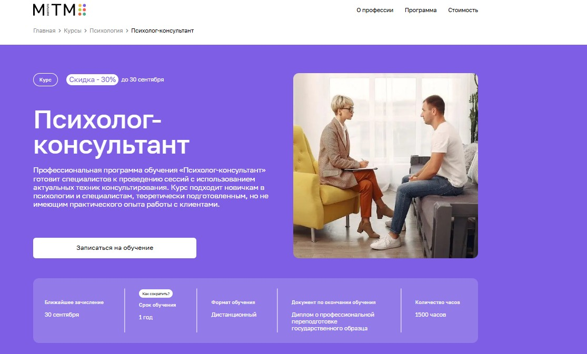⭐ Рейтинг: 5.0
- Сайт: https://mitm.institute/psiholog-konsultant--kurs
- Полная стоимость: от 9 170 ₽/мес при оплате в рассрочку; возможен налоговый вычет 13% от полной суммы обучения. Гранты не предусмотрены.
- Рассрочка: Беспроцентная рассрочка на 12 месяцев от «Тинькофф Банка».
- Длительность: 1 год (1500 часов), дистанционно.
- Документ: Диплом о профессиональной переподготовке государственного образца.
- Трудоустройство: Программа поддержки трудоустройства после окончания курса.
Особенности курса:
Обучение построено на актуальных методах психологического консультирования с акцентом на практике и личностном росте. Программа подходит как новичкам, так и специалистам, стремящимся систематизировать знания. Уделяется внимание работе с запросами клиентов разных возрастов, развитию навыков диагностик и этике в профессии. В формат включены практикумы, супервизии и разбор демонстрационных сессий. Обучение проходит полностью дистанционно — можно совмещать с работой и заботой о семье. Студенты получают доступ к сообществу, куратору 24/7 и Telegram-чату для обсуждений. Дополнительно — факультативы по киноклубу и построению личного бренда.
Преподаватели курса:
-
Елена Айрапетян — интегративный психолог с опытом более 7 лет, специалист по когнитивно-поведенческой терапии, член АКПП.
-
Анна Ермоленко — практикующий психолог, выпускница МГППУ, специалист по экстремальной и клинической психологии.
-
Анна Селезнева — семейный и индивидуальный психолог, руководитель факультета психологии, продюсер образовательных программ.
Кратко о программе курса:
- Введение в профессию и общая психология.
- Возрастная, социальная и клиническая психология.
- Психодиагностика и подходы к консультированию.
- Этапы работы с клиентом и стратегии ведения сессий.
- Психология семьи, сексуальности и групповое консультирование.
- Работа с ПТСР, горем, кризисами и проблемами самооценки.
- Практикум по психодиагностике и консультированию.
- Супервизия и итоговая аттестация.
- Факультативы: киноклуб, личный бренд, психологическая мастерская.
Чему научитесь:
Научитесь вести сессии с клиентами, ставить диагнозы, выстраивать стратегии работы и сопровождать через кризисы. Получите навыки слушания, анализа запроса и построения доверительных отношений. Освоите техники для работы с внутренними конфликтами и личностными вызовами.
Преимущества и особенности:
- Готовность к практике с первого дня — упор на отработку навыков в тройках и с супервизорами.
- Поддержка куратора и наставников 24/7, общение в Telegram-чате с коллегами и преподавателями.
- Государственный диплом, позволяющий начать профессиональную деятельность.
- Беспроцентная рассрочка и возможность вернуть 13% через налоговый вычет.
- Доступ к реальным клиентским кейсам и анализ демонстрационных сессий.
- Обучение можно пройти из любой страны — формат дистанционный, без визитов в ВУЗ.
Читайте отзывы учеников:
Слушатели отмечают простоту подачи материала, особенно для новичков, и гибкий график. Подкупает высокий уровень преподавателей — все они практикующие психологи. Многие говорят о поддержке кураторов, качественных лекциях в записи и ценной практике. Выпускники отмечают, что уже через месяц после обучения смогли найти работу или начать частную практику. Особенно ценят, что курс не отрывает от семьи и основной занятости.
Обучение на клинического психолога – Онлайн институт Smart
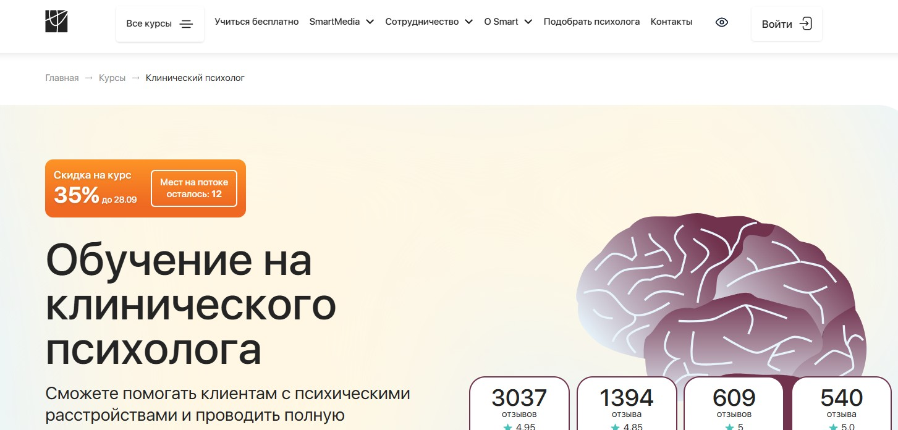⭐ Рейтинг: 4.9
- Сайт: smart-inc.ru/clinic-psycholog
- Полная стоимость: От 234 900 ₽ со скидкой. Есть возможность оформить налоговый вычет — вернуть 13% от уплаченной суммы. Грант на обучение не предусмотрен.
- Рассрочка: От 9 788 ₽/мес. на 24 месяца без переплат — проценты покрывает институт.
- Длительность: От 13 месяцев. Время включает подготовку и сдачу итоговой аттестации.
- Документ: Диплом о профессиональной переподготовке, зарегистрированный в ФРДО. Доступен второй диплом MBA (Чехия, HISTES, Гамбург) в топовых пакетах.
- Трудоустройство: Центр карьеры помогает начать практику — предоставляют первых клиентов, организуют супервизии, коуч-сессии и входят в профессиональные сообщества ОППЛ и АППП.
Особенности курса:
Программа по клинической психологии построена на практике: студенты работают с реальными кейсами, проходят супервизии, отрабатывают техники в тройках и участвуют в разборе сложных диагностик. Обучение подойдёт как новичкам, так и действующим специалистам. Доступ к материалам — навсегда. В курс включены модули по психосоматике, психодиагностике, нейропсихологии и работе с запросами вроде ПТСР, ОКР, биполярного расстройства и депрессии. Поддержка 24/7, личный куратор и менторы — практикующие психологи — помогают на всех этапах.
Преподаватели курса:
-
Кристина Юст — клинический психолог, детский нейропсихолог. Более 6 лет в сфере, провела свыше 4000 консультаций и 150 нейропсихологических диагностик в год.
-
Альбина Собина — клинический и полимодальный психолог, патопсихолог, супервизор ОППЛ, член Ассоциации КПТ. В практике с 2006 года, автор образовательных программ по профориентации.
Кратко о программе курса:
- Основы клинической психологии и патопсихология.
- Психофизиология и нейропсихология.
- Психодиагностика и дифференциальная психология.
- Психотерапия: направления, техники, возможности.
- Психосоматика: влияние эмоций на физическое здоровье.
- Работа с психическими расстройствами: депрессия, ПТСР, ОКР, ПРЛ, БАР.
- Психофармакология и взаимодействие с врачами.
- Детская и подростковая клиническая психология.
- Психологическое консультирование и коррекция для взрослых.
- Подготовка к профессиональной деятельности: ведение практики, личный бренд, маркетинг.
Чему научитесь:
Освоите методы диагностики и коррекции психических расстройств, научитесь работать с депрессией, ПТСР, ОКР, поймёте связь психики и тела. Получите навыки составления заключений, ведения сессий и подбора терапии под клиента.
Преимущества и особенности:
- Практико-ориентированный формат: 650 часов обучения, включая супервизии, кейсы и отработки в группах.
- Диплом с международным признанием в пакетах MBA — подойдёт для работы за рубежом.
- Партнёрство с ОППЛ и АППП — выпускники получают льготы при вступлении и доступ к закрытым мероприятиям.
- Центр карьеры помогает запустить практику: выдаём первых клиентов, проводим интервизии и коучинг.
Читайте отзывы учеников:
Слушатели отмечают высокую вовлечённость кураторов, качественные материалы, реальную практику и оперативную поддержку. Многие подчёркивают, что уже во время обучения начали принимать клиентов и чувствуют уверенность в навыках. Особенно ценят доступ к сообществу выпускников и бонусы вроде демосессий и интенсивов.
Клиническая психология – Психодемия
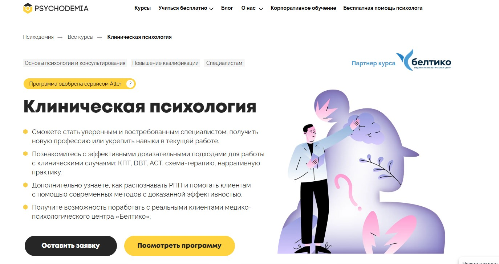⭐ Рейтинг: 4.9
- Сайт: psychodemia.ru/clinicalpsychology
- Полная стоимость: От 367 974 ₽ до 505 601 ₽ в зависимости от тарифа. Доступен налоговый вычет до 13% от суммы оплаты. Гранты на обучение не предусмотрены.
- Рассрочка: До 24 месяцев, от 15 332 ₽ в месяц.
- Длительность: 2 года (1061–1130 академических часов).
- Документ: Диплом о профессиональной переподготовке установленного образца при наличии высшего образования. Без высшего — сертификат о прохождении курса.
- Трудоустройство: Практика в медико-психологическом центре «Белтико», возможность провести сессию с реальным клиентом, доступ к закрытым мероприятиям и сообществу выпускников для профессионального роста.
Особенности курса:
Обучение сочетает современные доказательные методы клинической психологии с глубокой практической проработкой. Упор сделан на работу с реальными случаями, диагностическими интервью, формированию терапевтического альянса и применению эффективных подходов: КПТ, DBT, АСТ, схема-терапия, нарративная практика. В программе — свыше 100 видеоконсультаций, демосессии ведущих российских и западных специалистов, тренажёр-бот для отработки базовых навыков и анализ клинических кейсов. Все это помогает выработать уверенность, компетентность и профессиональную зрелость.
Преподаватели курса:
-
Галина Лайшева — кандидат психологических наук, сертифицированный когнитивно-поведенческий и семейный терапевт, более 12 лет опыта работы в психиатрической клинике с детьми и взрослыми. Автор образовательных программ по суицидологии и семейной психологии, эксперт ForbesLife.
Кратко о программе курса:
- Биологические основы поведения и нейроотличия при расстройствах.
- Введение в патопсихологию и психиатрию.
- Психофармакология: действие препаратов, взаимодействие с терапией.
- Клиническое интервьюирование и диагностика по МКБ и DSM.
- Развитие личности на разных этапах жизни.
- Клинические интервенции и профилактика рецидивов.
- Работа с расстройствами личности, настроения и тревожными состояниями.
- Травматический опыт и его последствия.
- Обсессивно-компульсивное расстройство и аддиктивное поведение.
- Суицидальное поведение: оценка рисков и кризисная помощь.
- Психотические и соматоформные расстройства.
- Бонусные модули: этика, мультикультурная компетентность, расстройства пищевого поведения.
Чему научитесь:
Научитесь выявлять и дифференцировать психические расстройства, проводить диагностику, выстраивать терапевтический процесс, работать с эмоциональной регуляцией и усиливать приверженность клиента к лечению. Получите навыки взаимодействия с врачами и смежными специалистами.
Преимущества и особенности:
- 70% практики: тренажёр-бот, групповые разборы, интервизии и супервизии.
- Работа с реальными клиентами в медико-психологическом центре «Белтико».
- Доступ к более чем 100 записям терапевтических сессий и их профессиональному анализу.
- Обучение по доказательным методам: КПТ, DBT, АСТ, схема-терапия и др.
- Поддержка куратора и рефлексивные встречи для личного и профессионального роста.
- Диплом, дающий право на ведение профессиональной деятельности в РФ.
- Одобрено сервисом Alter, заняло место в топ-5 Digital Learning 2023.
- Гибкий график: достаточно 7 часов в неделю для успешного освоения.
Читайте отзывы учеников:
Студенты отмечают высокий уровень подготовки, актуальность материала, поддержку кураторов и ценность практик. Многие подчёркивают, что курс помог структурировать знания, начать работать с клиническими случаями и повысить доверие клиентов. Особенно ценят практико-ориентированный подход, качество видеолекций и вовлечённость преподавателей.
Профессиональная переподготовка по клинической и кризисной психологии – Национальная академия дополнительного профессионального образования (НАДПО)
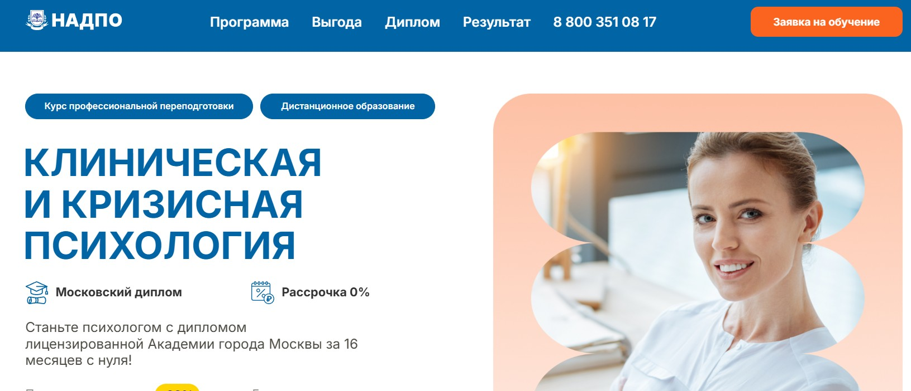⭐ Рейтинг: 4.8
- Сайт: psy.nadpo.ru/clinical-psychology-page
- Полная стоимость: 157 700 ₽, возможна оплата в рассрочку, налоговый вычет 13%, оплата материнским капиталом.
- Рассрочка: от 10 042 ₽/мес на 12 месяцев без процентов, от 2 983 ₽/мес на 24–36 месяцев через банк-партнера.
- Длительность: 16 месяцев дистанционного обучения.
- Документ: Диплом о профессиональной переподготовке установленного образца, вносится в ФИС ФРДО.
- Трудоустройство: Поддержка выпускников через центр трудоустройства: помощь в составлении резюме, подготовке к собеседованию, доступ к вакансиям, подкасты с работодателями.
Особенности курса:
Программа подготовки клинического и кризисного психолога сочетает фундаментальную теорию с интенсивной практикой. Обучение ведётся онлайн с доступом к материалам 24/7 навсегда. В программу включены практикумы, воркшопы, работа в парах и тройках с обратной связью от преподавателей. Слушатели получают доступ к сервисам ЛитРес и Библиоклуб, участвуют в киноклубе и книгоклубе, работают с персональным куратором. Все программы соответствуют ФГОС и профессиональным стандартам. Диплом позволяет осуществлять консультирование на всей территории РФ.
Преподаватели курса:
-
Челнокова Ирина Александровна — кандидат психологических наук, стаж работы — 16 лет.
-
Егорова Наталья Николаевна — кандидат психологических наук, более 22 лет опыта в научной и практической деятельности.
-
Леонова Светлана Юрьевна — преподаватель вуза, практический психолог с 12-летним стажем.
-
Елисеева Екатерина Алексеевна — практикующий специалист в области психологии с 13-летним опытом.
Кратко о программе курса:
- Основы законодательства и профессиональной этики.
- Общая, возрастная и патопсихология.
- Психология семьи и личности.
- Нейропсихология и физиология ЦНС.
- Введение в клиническую психологию и психосоматику.
- Психотерапия: теория и практика.
- Психодиагностика и психологическое консультирование.
- Клиническая психология в геронтологии и психиатрии.
- Практикумы по нейро-, пато-, психодиагностике и консультированию.
- Кризисная психология: работа с травмами, самоубийственным поведением, насилием.
- Психологическая помощь детям, парам и семьям в кризисах.
- Арт-терапия и методы работы с ПТСР.
- Превентивная работа и антикризисное вмешательство.
- Итоговая аттестация с тремя попытками сдачи.
Чему научитесь:
Вы освоите ключевые методы диагностики и консультирования, научитесь проводить кризисное вмешательство, работать с травмами и ПТСР, применять этические нормы и эффективно взаимодействовать с клиентами из разных культур. Получите уверенность для начала частной практики.
Преимущества и особенности:
- Обучение с нуля за 16 месяцев — программа рассчитана даже на новичков в области психологии.
- Практическая направленность: воркшопы, тренинги, разбор кейсов с опытными специалистами.
- Личный куратор и онлайн-поддержка — всегда на связи для помощи и мотивации.
- Помощь в трудоустройстве и бонусы: гайд по личному бренду, подкасты с работодателями, бесплатные книги от ЛитРес.
- Доступ навсегда: после окончания курса вы останетесь в системе с полным доступом к материалам и сообществу.
- Высокая востребованность профессии: можно стартовать в клиниках, частной практике, корпорациях.
- Возможность вернуть 13% стоимости обучения через налоговый вычет и оплатить маткапиталом.
- Уникальные дополнительные активности: киноклуб, книгоклуб, разбор фильмов с позиции психологии.
Читайте отзывы учеников:
Выпускники отмечают высокий уровень преподавания, системность программы и реальную применимость полученных знаний. Многие подчёркивают, что курс помог перейти в новую профессию, а уже действующие психологи — повысить квалификацию и доход. Особо хвалят поддержку кураторов, удобный формат обучения и быстрое трудоустройство. Некоторые начинали практику уже во время учёбы и окупали обучение за два месяца работы.
Профессия психолог-консультант – Talentsy
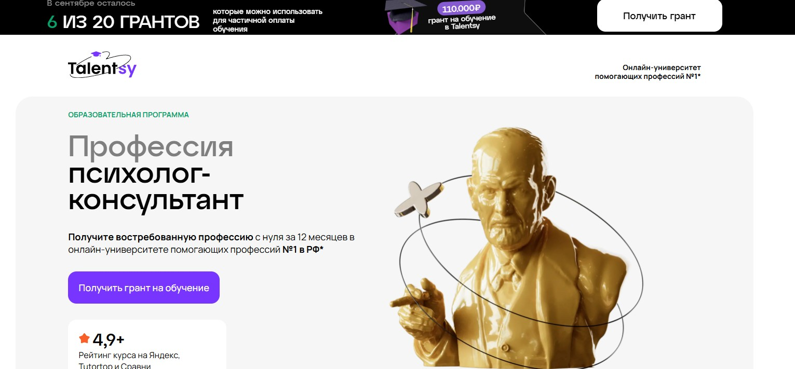⭐ Рейтинг: 4.8
- Сайт: talentsy.ru/course/psychologist-consultant/
- Полная стоимость: Обучение с возможностью рассрочки от 9 375 ₽/мес, налоговый вычет до 13%, действует грант 110 000 ₽ — осталось 6 мест.
- Рассрочка: От 9 375 ₽ в месяц на 24 месяца — без переплат, проценты берет на себя университет.
- Длительность: 12 месяцев интенсивного дистанционного обучения.
- Документ: Диплом о профессиональной переподготовке по стандартам РФ и международный диплом MBA (Чехия), признаваемый в ЕС и за рубежом.
- Трудоустройство: Первые 10 клиентов через сервис pomogayu.ru, помощь в построении личного бренда, продвижении в Telegram и соцсетях.
Особенности курса:
Программа охватывает интегративный подход — вы попробуете 10 методик и выберете наиболее подходящие для своей практики. Обучение доступно с нуля — не требуется психология в образовании. Программа основана на ФГОС ВО по направлению «Психология» и включает более 1200 часов практико-ориентированного обучения. Упор на практические навыки: 450 часов практики, интерактивные воркшопы, работа в мини-группах, супервизии, анализ сессий. Студенты начинают работу с реальными клиентами уже в процессе курса. Бесплатный доступ к психотерапевтическому шоу «Детектор личности» в подарок.
Преподаватели курса:
-
Ольга Виндекер — психолог с 30-летним стажем, член Психотерапевтической Лиги, телеведущая, автор книг.
-
Инна Васильева — доктор психологических наук, профессор, специалист в области интуиции, автор более 170 научных работ.
-
Ксения Кунникова — кандидат наук, нейропсихолог, руководитель грантов РФФИ.
-
Рустам Муслумов — кандидат наук, доцент УрФУ, преподаватель высшей школы.
-
Наталья Куделькина — клинический психолог, психотерапевт, 19 лет в практике.
-
Анжелика Вильгельм — кандидат наук, супервизор, преподаватель ведущих вузов.
-
Ярослав Коряков — психотерапевт, супервизор Европейской конфедерации, практикующий аналитик.
Кратко о программе курса:
- Знакомство с профессией и этикой консультирования.
- Мозг и поведение человека: биологические и когнитивные аспекты.
- Основы психологического консультирования.
- Психология личности и диагностика.
- Возрастная психология: от детства до старости.
- Семейная психология и сексуальность.
- Клиническая психология: выгорание, тревожность, кризисы.
- Кризисная помощь и работа с травмой.
- Современные терапевтические подходы: КПТ, гештальт, экзистенциализм и др.
- Начало практики: клиенты, сессии, супервизия.
- Построение личного бренда психолога и привлечение клиентов.
Чему научитесь:
Вы освоите работу с запросами клиентов: тревога, отношения, выгорание, самооценка. Научитесь выстраивать сессии, выявлять истинные причины проблем, проводить диагностику, применять более 10 терапевтических подходов и помогать людям этично и профессионально.
Преимущества и особенности:
- Обучение с нуля — не нужно психологическое образование.
- Практика с реальными клиентами уже в процессе обучения.
- Два диплома — российский и международный MBA, позволяющий работать за границей.
- Поддержка кураторов, специалистов по личному бренду и служба заботы на всех этапах.
- Партнёрство с профессиональными ассоциациями (АППК, IAAGT) — доступ к сообществу и мероприятиям.
- Преподаватели — ведущие психологи с научными степенями и практикой от 20 лет.
- Гибкий формат — можно совмещать с работой, обучаться с телефона или планшета.
- Бонус — первые 10 клиентов и помощь в продвижении личного канала.
Читайте отзывы учеников:
Выпускники отмечают высокую степень вовлечённости, поддержку кураторов, практико-ориентированную программу и реальную возможность начать зарабатывать уже во время обучения. Многие начинают частную практику сразу после завершения курса, а на платформах вроде Яндекс и Сравни.ру курс получает оценки выше 4.9. Студенты особенно отмечают качество преподавателей, доступность материалов и скорость получения первых клиентов.
Клинический психолог: обучение с нуля – Институт прикладной психологии в социальной сфере
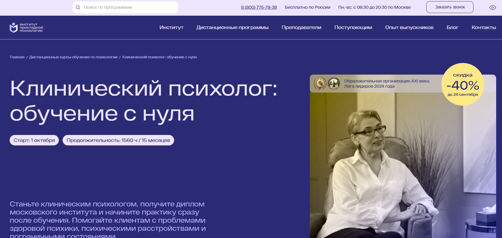⭐ Рейтинг: 4.7
- Сайт: ippss.ru/program/klinicheskaya-psikhologiya-s-nulya
- Полная стоимость: 130 600 ₽, со скидкой 116 700 ₽ до 17 сентября. Возможен налоговый вычет 13%. Грант на обучение не предоставляется.
- Рассрочка: Оплата частями или беспроцентная рассрочка от банка — от 10 883 ₽ в месяц на 12 месяцев.
- Длительность: 15,5 месяцев (1560 академических часов).
- Документ: Диплом о профессиональной переподготовке с квалификацией «Клинический психолог». Зарегистрирован в ФИС ФРДО, действует по всей России.
- Трудоустройство: Помощь в трудоустройстве через стажировки у партнёров, карьерные консультации, обучение поиску клиентов и продвижению в интернете.
Особенности курса:
Программа разработана по требованиям ФГОС и профстандарту «Психолог в социальной сфере». Обучение ведётся дистанционно — подходит тем, кто хочет начать с нуля и не имеет психологического образования. Уделяется внимание не только теории, но и практическим навыкам: диагностика, консультирование, супервизия, работа с кейсами. Все материалы доступны 24/7 в личном кабинете. После окончания — бессрочный доступ к архиву из 10 000+ вебинаров. Уникальная игра-трансляция по реальному клиническому запросу позволяет отработать навыки в приближённых к работе условиях. В программу включены мастер-классы от ведущих специалистов, бонусные материалы и постоянная поддержка кураторов и преподавателей.
Преподаватели курса:
-
Соловьева Светлана Борисовна — клинический и медицинский психолог, эксперт по диагностике аутизма, более 15 лет практики.
-
Николаева Ольга Юрьевна — семейный психолог, когнитивно-поведенческий терапевт, коуч ICF, кандидат наук.
-
Морозова Ольга Александровна — клинический психолог, ведущая терапевтических групп для подростков и взрослых, бизнес-тренер.
-
Дорофеева Елена Владимировна — практикующий психолог, специалист по профессиональной этике и личностному развитию специалистов.
Кратко о программе курса:
- Введение в профессию и профессиональная этика.
- Психология развития и возрастная психология.
- Общие психологические и естественнонаучные дисциплины (биология, общая психология, психофизиология).
- Методы диагностики и оценки психических состояний.
- Техники психотерапии: когнитивно-поведенческая, психодинамическая, системная.
- Работа с психосоматикой, тревожными и депрессивными расстройствами.
- Практические задания с обратной связью.
- 16 групповых онлайн-консультаций с преподавателем.
- 3 групповых практикума и 5 воркшопов.
- Личная и групповая супервизия.
- Игра-трансляция по реальному клиническому случаю.
- Обучение поиску клиентов и продвижению в интернете.
- Доступ к 20+ ежемесячным вебинарам с выдачей сертификатов.
- Работа с кейсами: разработка терапевтических планов и реабилитационных программ.
Чему научитесь:
Научитесь проводить диагностику, применять терапевтические техники, вести консультации и работать с расстройствами личности. Получите навыки ведения частной практики и поддержки клиентов с тревогой, депрессией, паническими атаками и другими запросами.
Преимущества и особенности:
- Обучение без вступительных экзаменов и без необходимости иметь психологическое образование.
- Диплом государственного образца с регистрацией в ФИС ФРДО — право работать официально.
- Практическая направленность: супервизия, кейсы, консультации, игра-трансляция.
- Поддержка на старте карьеры: помощь в запуске практики, стажировка, карьерные консультации.
- Доступ к закрытому каналу с вакансиями и библиотеке из 10 000+ вебинаров.
- Учебные материалы остаются навсегда после успешного завершения программы.
- Работа с опытными практикующими психологами, а не только теоретиками.
- Гибкий график — занимайтесь в удобное время на смартфоне или ноутбуке.
Читайте отзывы учеников:
Слушатели отмечают удобный формат дистанционного обучения, качество материалов и доступность преподавателей. Многие подчёркивают, что уже во время курса начали практиковать и получать первых клиентов. Особенно ценят поддержку кураторов, наличие стажировок и реальных кейсов. Отмечают, что программа помогла не только освоить профессию, но и лучше понимать себя. Студенты рекомендуют курс тем, кто хочет начать новую карьеру в психологии без отрыва от текущей работы.
Профессиональная переподготовка в области когнитивно-поведенческой психотерапии – Институт Профессионального Образования (ИПО)
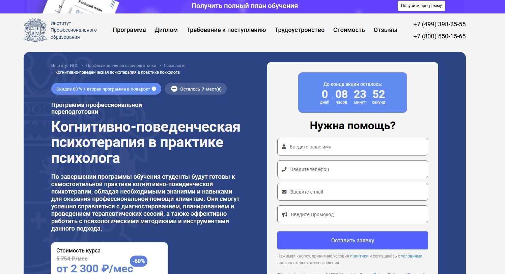⭐ Рейтинг: 4.7
- Сайт: ipo.msk.ru/professionalnaja-perepodgotovka/psihologija/kognitivno-povedencheskaya-psikhoterapii-v-praktike-psikhologa-pp966
- Полная стоимость: От 55 200 рублей вместо 138 100 – скидка 60%. Возможен налоговый вычет 13% от суммы оплаты.
- Рассрочка: От 2 300 рублей в месяц на 24 месяца без переплат.
- Длительность: 11 месяцев (966 часов), посвящение 10–12 часов в неделю.
- Документ: Диплом о профессиональной переподготовке, действующий на всей территории РФ, с правом на консультирование.
- Трудоустройство: Помощь в трудоустройстве: тренировки собеседований, проверка резюме, отправка в компании-партнёры, карьерные консультации через Центр развития карьеры.
Особенности курса:
Обучение проводится дистанционно с получением государственного диплома. Программа ориентирована на формирование практического навыка КПТ с разбором реальных кейсов. Включает поддержку куратора, доступ к закрытому комьюнити, библиотеке ЮРАЙТ и бессрочному сохранению материалов. При регистрации — скидка 60% и вторая программа в подарок. Слушатели учатся структурировать терапевтические сессии, диагностировать состояния, работать с когнитивными искажениями и автоматическими мыслями. Программа подходит как новичкам, так и специалистам смежных профессий — педагогам, врачам, соцработникам.
Преподаватели курса:
-
Олеся Александровна Круглушина — выпускница МГОУ, психолог-консультант, психотерапевт с интегративным подходом, преподаватель психологии.
-
Таисия Антонкина — практикующий психолог, профессиональный коуч с многолетним опытом сопровождения клиентов.
-
Татьяна Геннадьевна Урывчикова — клинический и нейропсихолог, член Ассоциации когнитивно-поведенческой психотерапии, преподаватель с практической экспертизой.
Кратко о программе курса:
- Основы психологии и психотерапии
- Теория и методология когнитивно-поведенческой терапии
- Диагностика, концептуализация и составление плана терапии
- Работа с тревожностью, депрессией, ОКР, личностными особенностями
- Техники когнитивной реструктуризации и поведенческих экспериментов
- Создание терапевтического альянса и этика в практике
- Психодиагностика и тестирование
- Практика ведения сессий, кейс-методы
- Работа с горем, сопротивлением клиента и посттравматическими состояниями
- Схема-терапия и рационально-эмоционально-поведенческая терапия
- Индивидуальные и групповые формы консультирования
- Мониторинг эффективности и итоговый экзамен
Чему научитесь:
Вы освоите современный и научно обоснованный подход к работе с клиентами, научитесь диагностировать расстройства, строить терапевтические сессии, применять техники КПТ и работать с тревожностью, депрессией и искажёнными убеждениями клиентов.
Преимущества и особенности:
- Гибкий график и дистанционный формат — можно совмещать с работой или учёбой.
- Регулярные вебинары и воркшопы с практикующими психологами.
- Бонус: два дополнительных курса в подарок при выборе тарифа.
- Поддержка на всех этапах — куратор, менторство, карьерный центр.
- Документ гособразца, дающий право на независимую практику.
- Помощь в трудоустройстве: от проработки резюме до рассылки по компаниям.
- Доступ к закрытому комьюнити и библиотеке профессиональной литературы.
- Высокий спрос на специалистов: более 5600 компаний ищут психологов.
Читайте отзывы учеников:
Выпускники отмечают практическую направленность программы, глубокую проработку КПТ-инструментов и высокий уровень преподавателей. Многие подчёркивают удобство онлайн-формата и ценят поддержку кураторов. Студенты отмечают, что курс помог начать частную практику и повысить доход — средняя стоимость консультации в 2025 году составляет 4000 рублей. Более 3500 отзывов на независимых площадках подтверждают доверие к образовательному процессу и результативность обучения.